Part A: Exploring the Power of Flow Models
1. Visualizing Training and Sampling
1.1 Constructing Noisy Training Inputs
TODO
def interpolate(image, noise, t):
return t * image + (1 - t) * noise
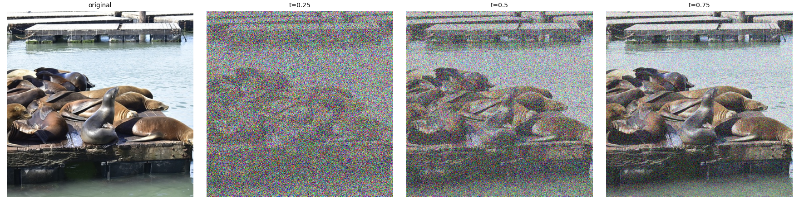
1.2 Classical Denoising
TODO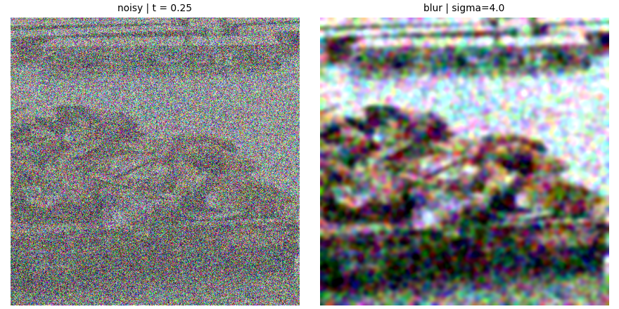
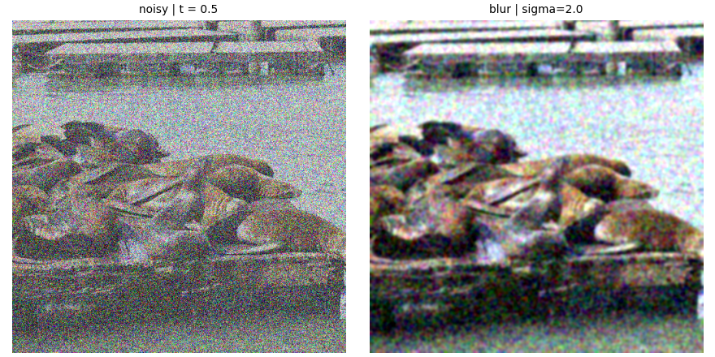
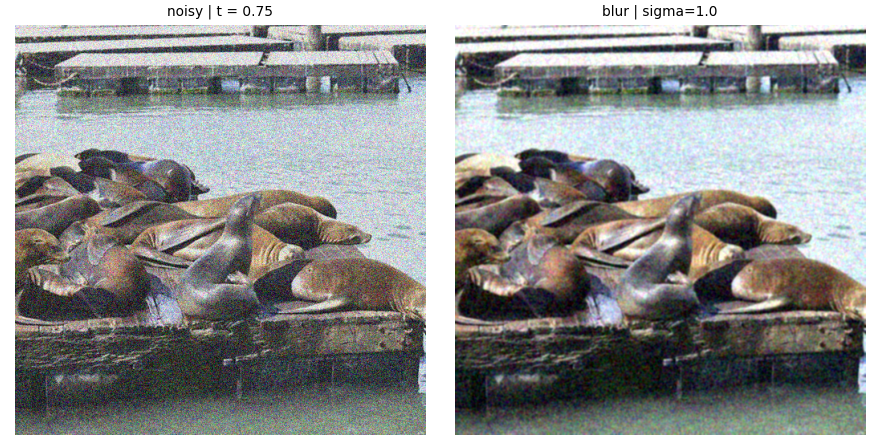
1.3 One-Step Denoising
TODO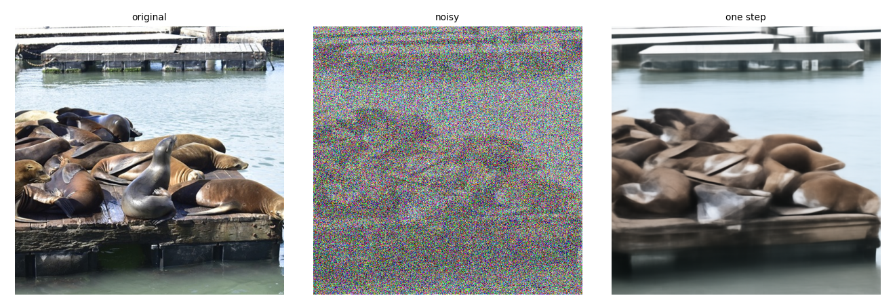
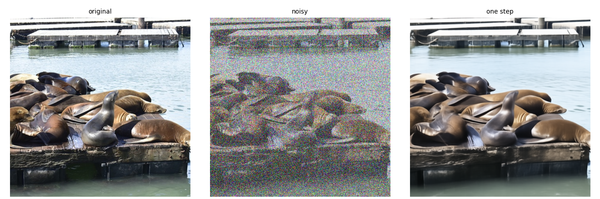
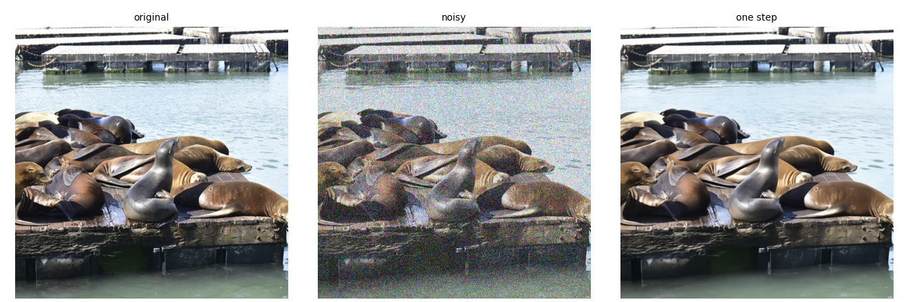
1.4 Visualizing Velocity
TODO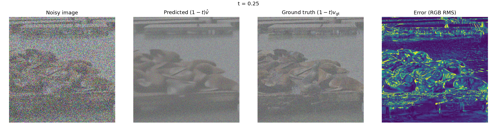
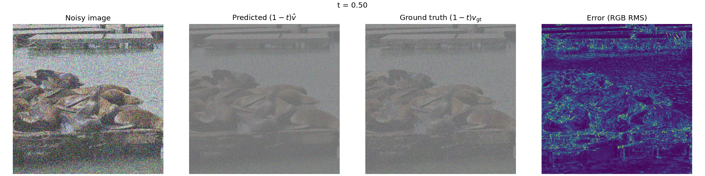
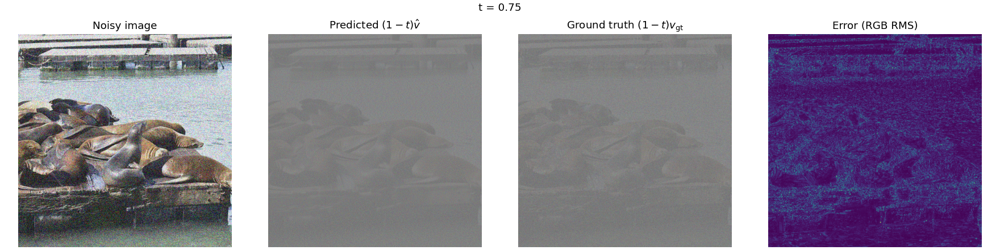
1.5 Iterative Denoising with Euler Sampling
TODO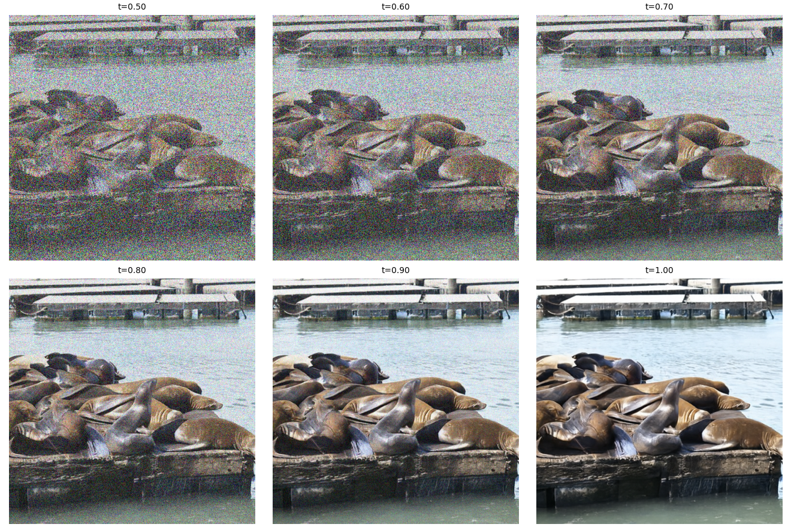
1.6 Generating Images from Noise
TODO
2. Conditional Generation and Guidance
2.1 Classifier-Free Guidance (CFG)
TODO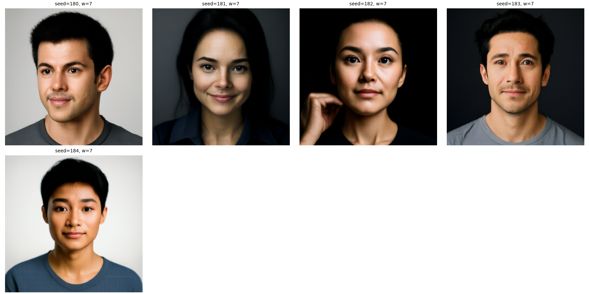
3. Creative Applications
3.1 Image-to-Image Editing
TODO
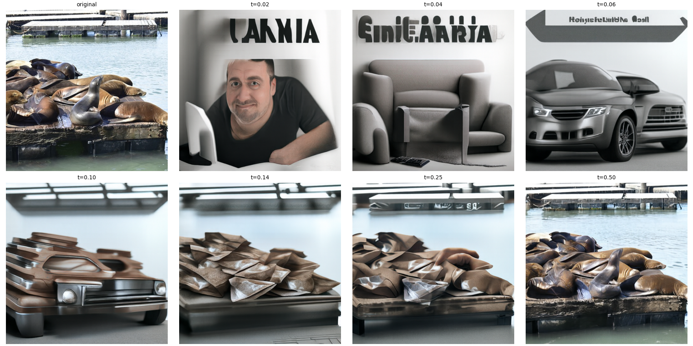
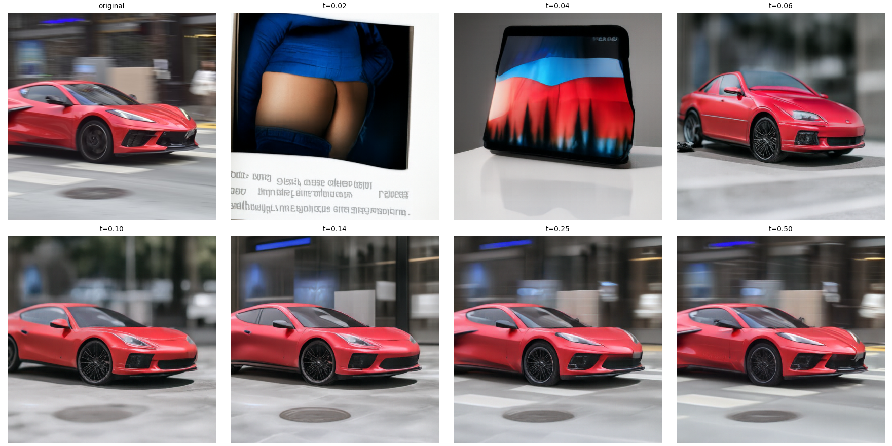
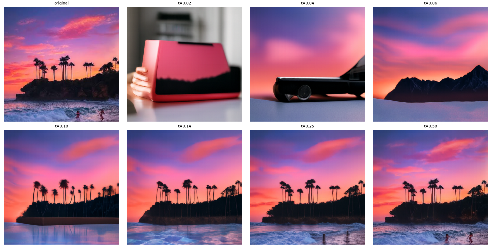
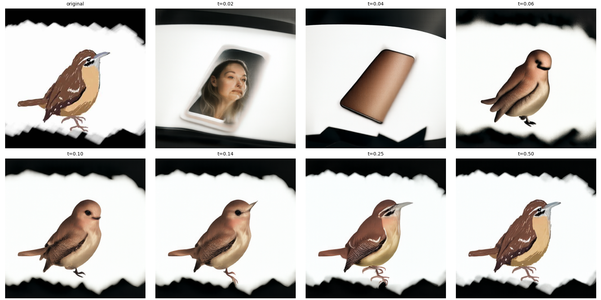
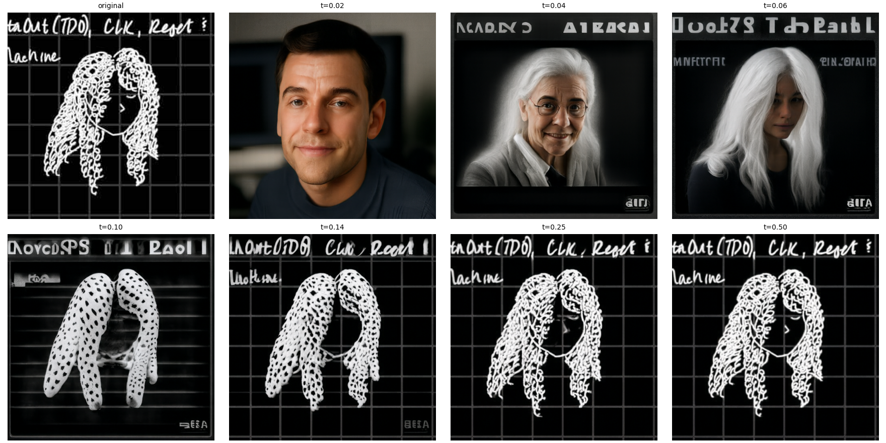
3.2 Text-Guided Image Editing
TODO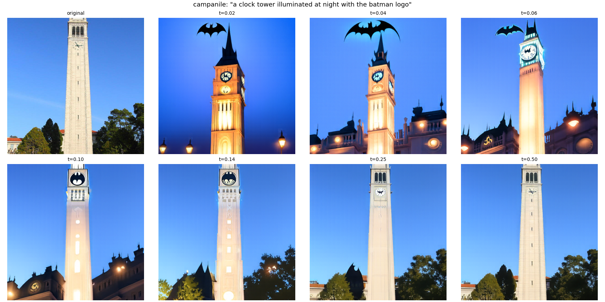
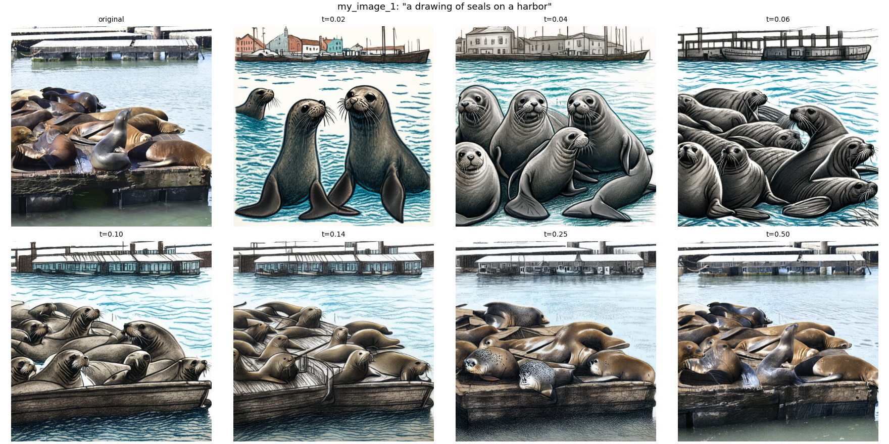
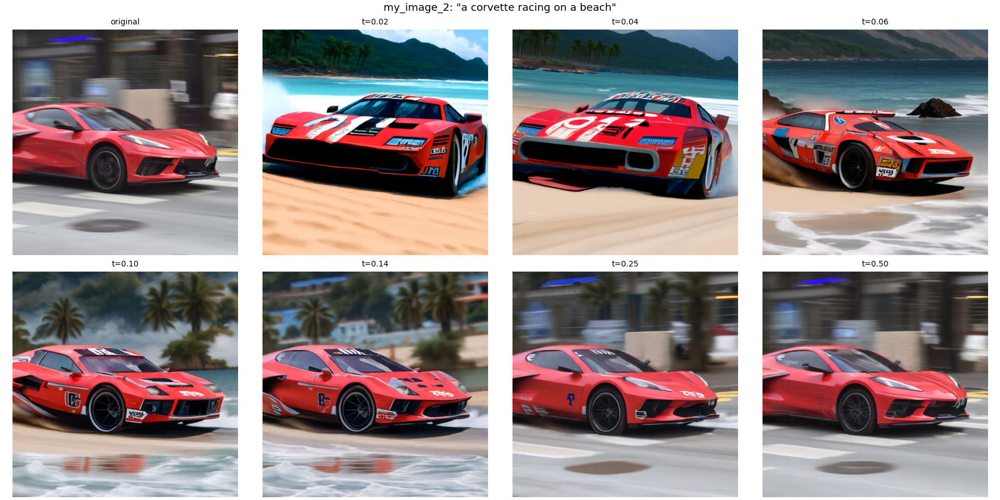
3.3 Visual Anagrams
TODO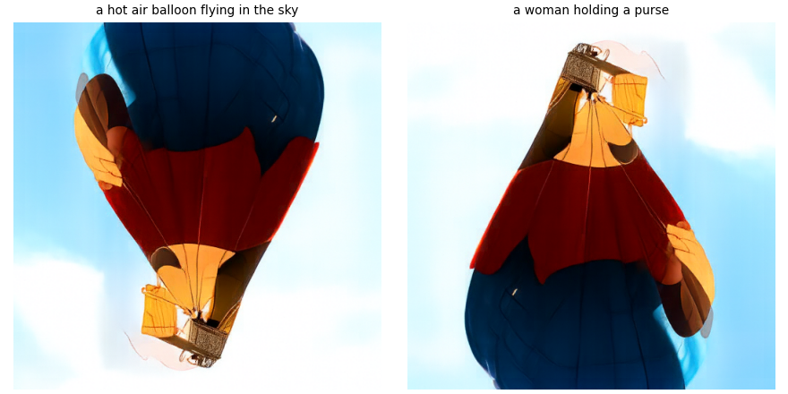
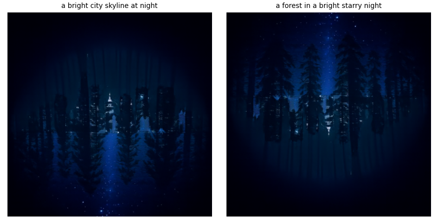
3.4 Hybrid Images
TODO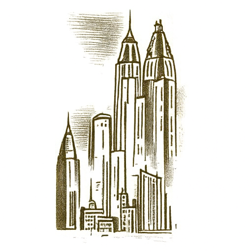
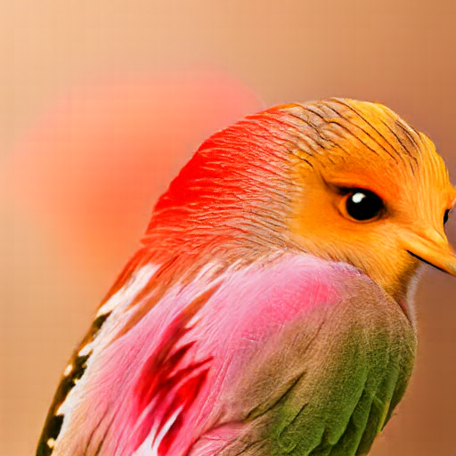